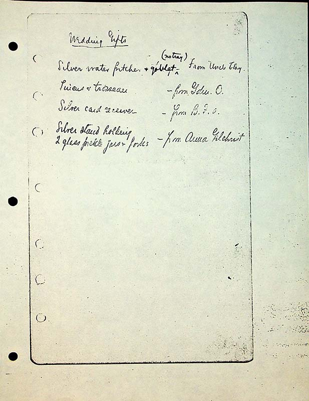

Wedding Gifts
Silver water pitcher & goblets^ (no tray) from Uncle Clay Linens & trouseau[sic] - from Gdm.O. Silver card receiver- from B.F.O Silver stand holding 2 glass pickle jars & forks- from Anna Gilchrist